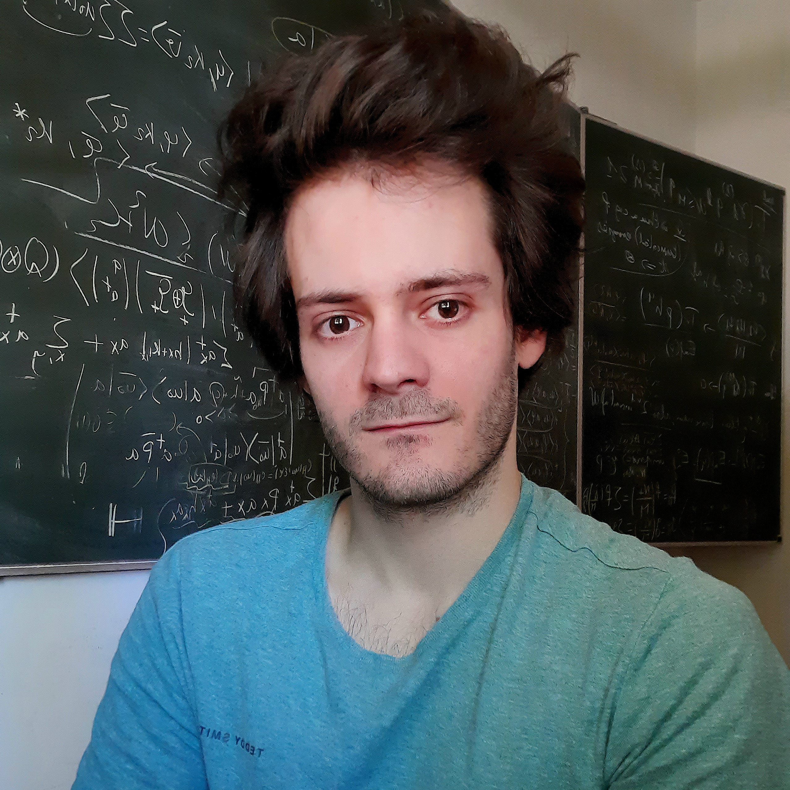
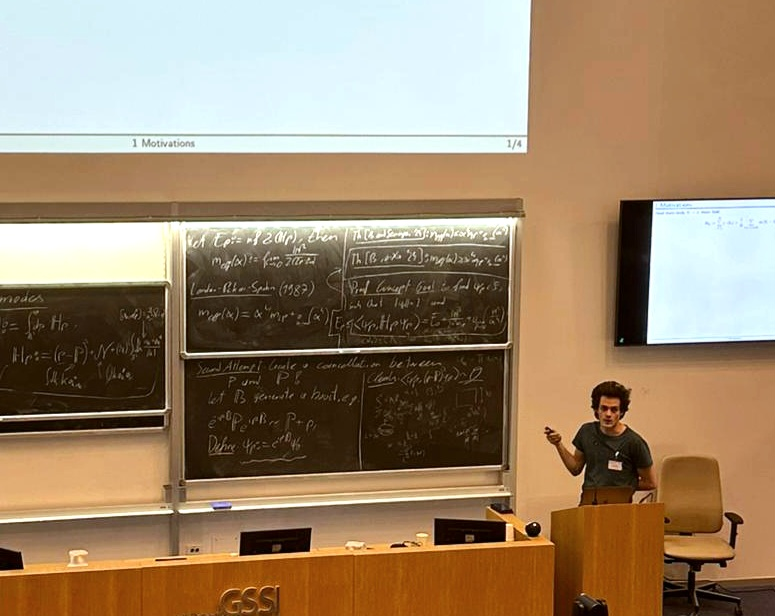

1997/01/06 years old, Germany, Bremen
General presentation
I am boardly interested in mathematical physics. I did my PHD thesis under the supervision of Nicolas Rougerie at ENS Lyon about mean field limits for many body systems in quantum mechanics.
Current position
I am currently a postdoc at constructor University Bremen in
Sören Petrat's group.
PHD thesis
2023 - Semi-classical limits of 2D fermions under high magnetic fields
Hal,
PDF,
Dark theme
Published papers
2024 - Multiple Landau level filling for a large magnetic field limit of 2D fermions
J. Math. Phys.,
ArXiv,
Hal,
PDF,
Dark theme
Preprints
2024 - Gyrokinetic limit of the 2D Hartree equation in a large magnetic field
ArXiv,
Hal,
PDF
2024 - Mean field dynamics of the Bose Hubbard model in large dimension
ArXiv,
PDF

Presentations
Oct 2025, Institut Henri Poincaré,
Séminaire Problèmes Spectraux en Physique Mathématique,
notes
Sep 2025, Technical University of Munich,
QMATH16 Mathematical Results in Quantum Theory,
poster,
Springer prize
Jul 2025, University of Twente,
International Workshop on Operator Theory and its Applications,
slides
May 2025, Oldenburg,
44th Northwest German Functional Analysis Colloquium,
notes
Mar 2025, Rennes,
Effective Approximation and Dynamics of Many-Body Quantum Systems Mini Workshop,
notes
Feb 2025, L'Aquila,
Mathematical Challenges in Quantum Mechanics school and workshop,
slides
Aug 2024, Bremen,
XLIV Dynamics Days Europe,
slides
Jul 2024, Metz,
Summer School on Effective Approximation and Dynamics of Many-Body Quantum Systems,
poster
Jul 2024, Strasbourg,
XXI International Congress On Mathematical Physics,
slides
Jun 2024, Hagen,
Walkshop on Mathematical Physics,
slides
Feb 2024, Braunschweig,
Symposium on Mathematical Physics,
notes
Sep 2023, Metz,
Kick-off Meeting: Effective Approximation and Dynamics of Many-Body Quantum Systems,
notes
Feb 2023, Bremen,
Mathematical and Theoretical Physics Seminar,
notes
Jan 2023, Lyon,
UMPA and ICJ - PHD seminar,
notes
Aug 2022, Venice,
Quantissima in the Serenissima IV,
slides
Jul 2022, Lyon,
UMPA - EDP days,
notes
Jun 2021, Lyon,
UMPA - modelization and analysis team seminar,
slides
Feb 2021, Lyon,
UMPA - modelization and analysis team seminar,
slides
May 2020, Grenoble,
LPMMC weekly seminar,
slides
This page is a work in progress (see CV in the meantime).
I intend to post here all my ressources for the classes I taught. While this is primarely indended for my students, any reader may feel free to use the content of this page with the noble purpose of learning or teaching mathematics. I also expect this to be my extended teaching curriculum vitae.
2025 - Real analysis - Constructor university
Measure theory class intended for second year bechelor students of the bachelor in Mathematics, Modeling and Data Analytics at Constructor University.
Lecture notes part 1,
Lecture notes part 2 (Handwritten),
Tutorials.
2024 - Real analysis tutorials - Constructor university
This is a spezialization class intended for third year bechelor students of the bachelor in Mathematics, Modeling and Data Analytics at Constructor University about topology and introducion to functional analysis.
Tutorials,
Handwritten solutions.
 CV
CV dperice@constructor.university
dperice@constructor.university Denis Périce#5571
Denis Périce#5571 Denis-Perice
Denis-Perice